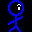

穴掘りWars 2
注意！音が大きいです！
遊び方
まぁやればわかりますけど。
目的
君はよしおとなり、穴を掘り、梯子を上り、石を乗り越え 愛を獲得するのだ！キャラクター
よしお
主人公です。目から怪光線を出して土を溶かすことができます。 愛に飢えていおり、いつも愛を探しています。
土
土です。怪光線で溶かすことができます。
はしご
頑丈なハシゴです。登ることができます。ハシゴの上に石があってもびくともしません。ハシゴの真下を掘ると梯子が落ちてきます。 ハシゴは押せません。
石
重い石です。つねに土かハシゴに支えられている状態になっています。 石の下に空白ができると地滑りをおこして落ちてきます。 重いので一度に一つしか押せません。
愛
愛です。愛にたどり着けばクリアです。
操作
- 移動：カーソルキー
- 何も無いところか、梯子は移動可能ですが、土や石の方向へは進めません。
- また、１マスなら落下できますが、２マス以上落下すると死んでしまいます。
- 石は一つだけなら真横に押すことができます。ハシゴは押せません。
- 穴を掘る：スペースキー
- 主人公は向いている方向に怪光線を発射し、土を掘ることができます。
- 土を掘った時、掘った土の上の方に石があると、地滑りをおこします。
- 梯子の下を掘ると梯子は落下します。ただし、梯子と穴の間に土があれば梯子は落下しません。
- やりなおし：エスケープキー
- ゲーム中いつでも「エスケープキー」を押せばそのステージをやり直すことができます。 また、死んだときにもスペースキーかエスケープキーを押せばそのステージをやり直せます。
- コンテニュー：ありません
- 「コンテニュー」とか「続きから」が欲しいとか言ってる人には愛なんて獲得できんのです。 えらい人にはそれがわからんのです。
- 死亡回数制限、時間制限などはありません。ゆっくり何度でも挑戦してください。
謝辞
- BGM提供:propan mode様
- 効果音提供:ザ・マッチメイカァズ2nd様